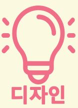
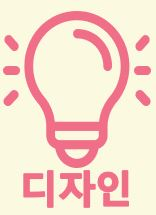
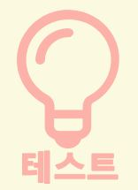
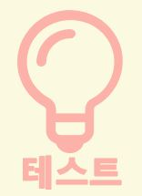

 


안드로이드와 iOS는 각각 디자인 가이드를 두고 있음
디자인 가이드는 앱 디자인을 시작하기 전에 반드시 검토
디자인 가이드를 준수해야 각 플랫폼에 맞는 앱 디자인, 사용자의 익숙한 UX/UI 경험을 활용 가능
안드로이드 디자인 가이드 바로가기 iOS 디자인 가이드 바로가기
유사한 기능을 제공하는 경쟁 어플리케이션의 UX/UI 사례 검토
사례 조사를 통해 어떤 장점을 가져오고 어떤 부분을 커스터마이징 할 수 있는지 살펴봐야함
다양한 앱 UX/UI 사례 제공 사이트 ->
안드로이드와 iOS에서 제공하는 스타일과 테마를 사용하여
UX/UI 경험에 부합하면서도 빠르게 디자인
테마 선택과 함께 앱의 주 색상과 보조 색상 선택
앱 가이드 내에서 이루어져야함 ! 테마 커스텀 작업을 통해 앱 만의 창의적인 디자인을 적용할 수 있음